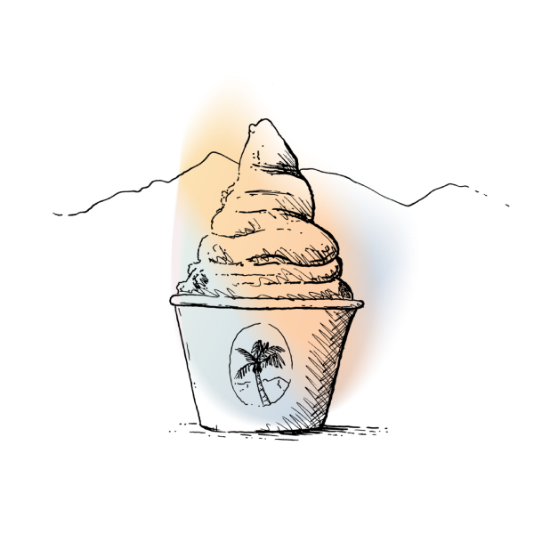

Eat & Drink
Our food program features top restaurants from across the country offering a wide variety of cuisine that pleases any festival-goer. Vegan & gluten-free options available.
Our food program features top restaurants from across the country offering a wide variety of cuisine that pleases any festival-goer. Vegan & gluten-free options available.
Here you'll find our signature specialty cocktail programs and large Craft Beer selections. Expect to visit new and/or returning favorites such as The Cabin, Craft Beer Barn, Wish You Were Beer, Bar Flores, Best Friend, Block Party, Sonny's by Attaboy, PDTropicale, craft on draft mixed cocktails and more. Also featuring Coffees, Teas and Juices plus a selection of non-alcoholic beverages.
Alcohol purchasers must be 21+ with proper ID. ** All bars are operated by Best Beverage Catering.
Enjoy Coachella’s food lovers haven featuring more than a dozen carefully-curated food & beverage vendors from across the country under one large tent with plenty of shaded seating.
Our food program features top restaurants from across the country. Offering a wide variety of cuisine that will please any festival-goer. Vendors range from chef-driven concepts to artisanal ice cream shops and crave worthy street food. Vegetarian (VEG), Vegan (V) and gluten-free (GV) options are available if indicated.
For the seventh year, Outstanding In The Field is setting a long table in the tranquil hideaway of our VIP Rose Garden. The intimate area allows you to take refuge (and a seat!) at the festival while you mingle with other guests over a full-service, four-course family style meal, a cocktail and ample regional wine. Dinner will be served just as the sun starts to hang low.
Festival pass required. Seating begins at 6pm. Tickets include a welcome cocktail, beer & wine, plus exclusive access to the VIP Rose Garden on the day of your dinner
Chef Phillip Frankland Lee’s Sushi Speakeasy is featuring a 17 course Omakase and Sake pairing plus access to the Sushi Speakeasy behind an unmarked door hidden in plain sight within Indio Central Market.
Explore an immersive tasting experience that brings sounds, scents, visuals, and unforgettable flavors all synced to the music of Coachella. Introducing Lay’s Fresh4D.